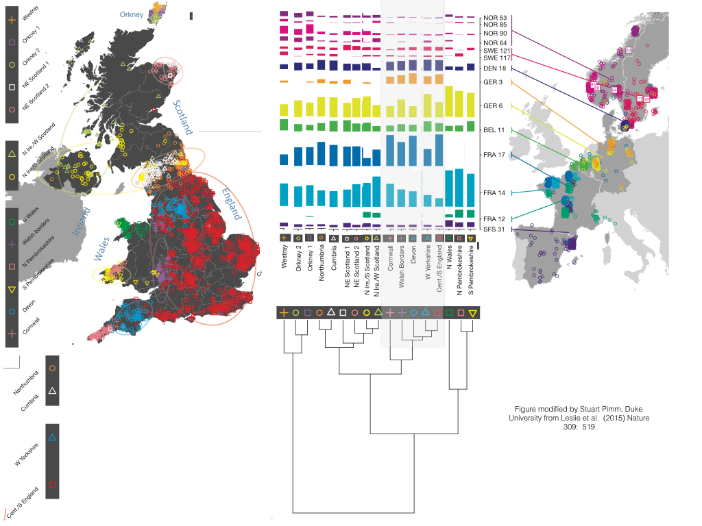

The info graphic below shows a combination of DNA studies and their dominate markers in the UK, Northern Europe, France and Spain.(1)
Celtic settlements of the UK and Ireland began around 500 bc. Warlike peoples who expanded rapidly in Europe,
dominated the earlier homo sapiens who settled the UK when there was a 'land bridge' into what is now the UK and Ireland,
after the Ice Age up until the Iron Age. The Original Celts in Europe dominated Southern France and all of Spain on the Iberian Penisula.
Then made their way up through France West into mainland Europe.(2)(3)
The Celts are genetically distinct from the German Tribes as is the German Tribes from the Nordic Tribes. The examples on the info graphic where,
it states NOR53 down to SFS31 are the distinct genetic markers found in the studies with NOR meaning Norway,
SWE for Sweden, DEN for Denmark, GER for Germany, BEL for Belgium, FRA for France and SFS for South France/Spain.(4)
The English appear to have a majority Anglo-Saxon and North Germanic DNA lineage although under half the DNA markers attributed to the those settlers
with the rest being Eastern Briton Celts, French (either attributed to the Normans or previous French Celt settlers)
and some Viking but not a major amount attriburted to the DaneLaw - the Viking Juteland's reign.
Showing that they came to rule like the Romans without mass intermarriage.(5)
There is evidence of Nordic Viking DNA in a large patch in the tip of Cornwall and in "Little England Pembrokeshire Wales",
with some in North Eastern Scotland where the Vikings intermaried with the Picts(*). With evidence of Anglo-Saxon settlements through DNA study in
Northern Ireland, South Western Scotland and North Eastern England.(6)
There is DNA evidence of Northern French DNA in Devon and some surrounding areas, also in North Western England.(7)
(1)Study acheived by Duke University, Leslie et al, 2015, Nature 309. 519. Weblink Vhttp://historyofengland.typepad.com/files/leslie-et-al-nature-edited-1.pdf.
Website reference link - https://thehistoryofengland.co.uk/resource/are-all-those-stories-about-where-we-come-from-true/
(2),(4),(5),(6), (7)Study acheived by Duke University, Leslie et al, 2015, Nature 309. 519. Weblink Vhttp://historyofengland.typepad.com/files/leslie-et-al-nature-edited-1.pdf.
(3)http://www.primaryhomeworkhelp.co.uk/timeline.html
(*) See a short description of the Picts on the Previous page.
